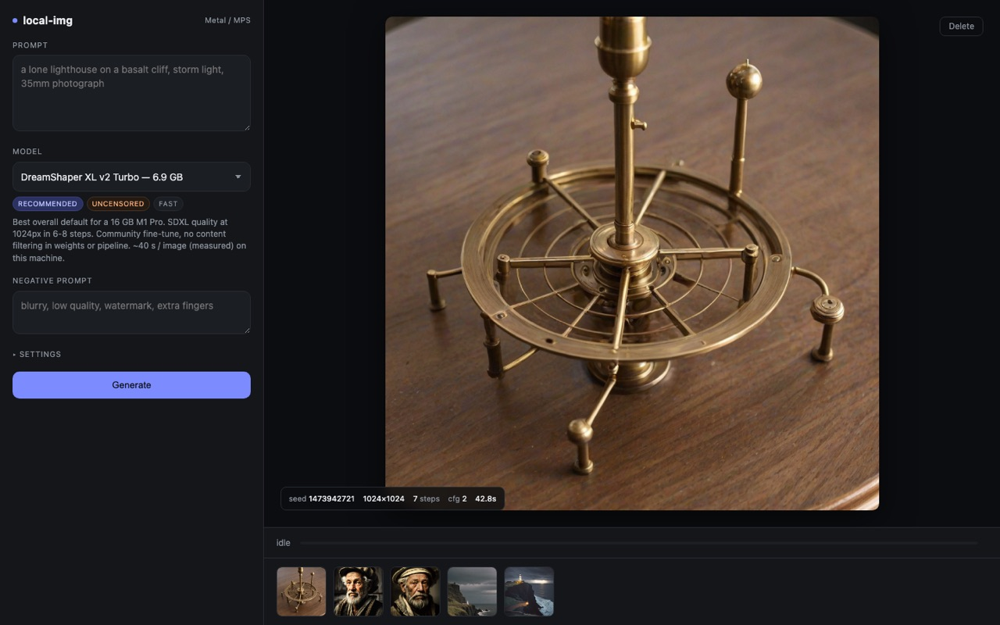

Generá imágenes sin que salgan nunca de tu computadora.
Escribís un prompt, sale un PNG. Todo corre en tu propia placa de video, así que nada de lo que escribís y nada de lo que hacés se sube, se registra ni lo revisa nadie. Después de la primera descarga funciona con el wi-fi apagado.
Los builds no están firmados — los certificados de firma cuestan plata todos los años y esto es gratis — así que tu computadora te va a avisar una vez cuando la abras. Acá está exactamente qué dice y qué hay que tocar.
El AppImage pesa tanto más que el .deb porque trae su propio runtime de webview para andar en cualquier distro; el .deb usa el del sistema.

Se configura sola. No tenés que instalar nada más.
La mayoría de las herramientas como esta te piden instalar Python, después un gestor de paquetes, después una lista de librerías. Esta trae todo eso adentro, en una carpeta aparte, así el día que la borres se va entera y no queda nada dando vueltas.
-
La app descarga su motor
Alrededor de 1 GB en una Mac, o hasta 7 GB en una PC con placa NVIDIA, donde las librerías gráficas pesan mucho más. Pasa una sola vez. Vas a ver una barra de progreso, y podés cerrar la ventana y volver después.
-
Mide tu máquina
Lee tu chip, cuánta memoria te va a entregar realmente la placa de video y cuánto disco libre te queda — y después te muestra solo los modelos que van a andar de verdad, con el resto listado junto al número que los bloquea. Nada de eso sale de tu máquina.
-
Recomienda un modelo y pregunta antes de bajarlo
Los modelos pesan entre 2 GB y 34 GB, así que te dice cuánto ocupa el que te recomienda, y espera. De ahí en adelante ya estás generando imágenes, y la app funciona sin conexión.
La memoria decide todo.
No hace falta que sepas nada de esto — la app lo resuelve sola y esconde lo que no entra. Está acá porque es la respuesta honesta a «¿esto va a andar en mi laptop?».
| Modelo | Descarga | Necesita | Por imagen |
|---|---|---|---|
| DreamShaper 8 | 2.1 GB | 3 GB GPU · 8 GB RAM | ~18 s |
| SD Turbo | 2.6 GB | 3 GB GPU · 8 GB RAM | ~2 s |
| DreamShaper XL v2 Turbo | 6.9 GB | 9.5 GB GPU · 16 GB RAM | ~40 s |
| Juggernaut XL v9 | 7.1 GB | 9.5 GB GPU · 16 GB RAM | ~180 s |
| Shuttle 3 Diffusion | 33.7 GB | 26 GB GPU · 48 GB RAM | ~120 s |
Son diez modelos en total; acá ves cinco. Los tiempos en este color están medidos en un M1 Pro — el resto son estimaciones, hasta que la app te vea generar tres veces con ese modelo: de ahí en adelante usa tus propios números y lo aclara. Solo se midió una placa NVIDIA (una RTX 3050 Laptop), y resultó cerca del doble de lenta de lo previsto — tomá una estimación en NVIDIA como optimista hasta que la app tenga tus propios números.
Tu computadora te va a frenar una vez. Así se pasa.
Los dos sistemas avisan cuando una app viene de alguien que no pagó un certificado de firma. Es un clic, una sola vez, y tu computadora se acuerda.
macOS
«local-img no se puede abrir porque no se puede verificar al desarrollador».
Hacé clic derecho sobre la app en la carpeta Aplicaciones, elegí Open («Abrir», si tenés el sistema en español) y después Open otra vez en el cartel que aparece. Con doble clic no alcanza la primera vez: tiene que ser con clic derecho.
Windows
«Windows protegió su PC».
Hacé clic en More info («Más información»), que despliega un botón, y después en Run anyway («Ejecutar de todas formas»). El botón no está a la vista hasta ese primer clic, y es justo la parte que casi todos se pierden.
Acá no hay nada escondido.
Si preferís no pasar por el aviso de seguridad, o querés leer primero lo que vas a correr, todo el proyecto está en GitHub y se instala desde el código en cualquier máquina que tenga Python 3.11 o 3.12.
# macOS o Linux git clone https://github.com/giancarlobrusca/local-img cd local-img ./setup.sh # venv de Python + librerías, unos minutos ./run.sh # → http://127.0.0.1:7788